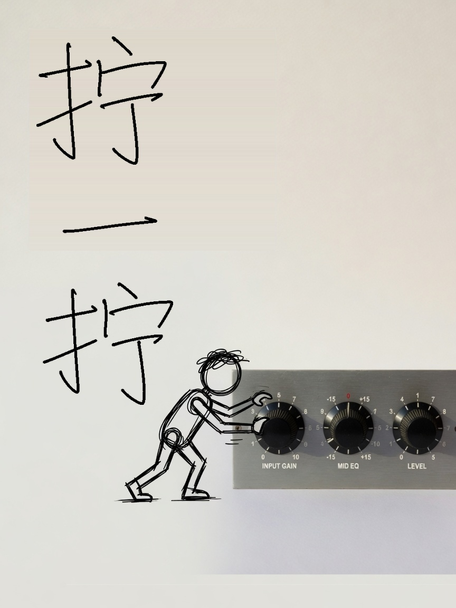

模型一册
看得见的
大语言模型
从输入到办事。这一册不点滑块：白纸、实物、歪扭手写标题。正文同一副文楷，写意只在图里。
信封进来，事情出去。
- 01输入字变成坐标
- 02看见注意力
- 03生成写下下一个
- 04对齐改成专才
- 05办事工具与循环
01
机器学习：蒙眼下山
模型不是一串写死的规则。它是一堆可以拧的数字。猜错了，就顺着坡往回拧一点。拧够多次，错得最少的地方，就是它学会的样子。
打个比方
蒙着眼往山下走。看不见路，但脚能感觉哪边更陡。朝更陡的反方向迈一小步，再感觉，再迈。谷底就是错得最少的地方。步子太大，会在两边来回跳；太小，走一夜也到不了。
 梯度只告诉方向，不告诉该迈多大。
去互动版亲手训一条直线
梯度只告诉方向，不告诉该迈多大。
去互动版亲手训一条直线
一条直线切开不了弯的世界。
02
神经网络：把直线叠起来
上一章那条直线只能切开线性可分的点。真实世界是弯的。办法很朴素：线性变换之后弯折一次，再叠一层。叠够深，就能画复杂的边界。
弯折是什么
每个神经元先加权求和，再过激活函数。ReLU 的规则简单到可笑：负数变 0，正数原样通过。就这一下，叠起来的网络才有画曲线的能力。
多一张纸，就多一次弯折。
去互动版看它分开两团点
网络只认数字。下一步：把字变成坐标。
03
文字变数字：抽一张卡片
神经网络只吃数字。所以先把一句话切成小块（token），每块查表换成一串坐标。这串数字不是随便编的，训练会把意思相近的词推到相近的位置。
为什么不按字切
按单字切，序列太长，模型算不动。按整词切，词表会爆炸，还对付不了没见过的词。折中叫 BPE：高频的粘成一块，低频的拆开。所以「注意力」常常是一块，unbelievable 却被拆成 un + believ + able。
每个词是抽屉里的一张卡片。
去互动版看分词和词向量
词有了坐标，但还互相看不见。
04
注意力：拿一张卡片去对整面墙
读到「它饿了」的「它」，你会回头找「小猫」。注意力把这个动作做成矩阵乘法：每个词去问所有词「你跟我有多相关」，再按相关度把信息汇总过来。
三个角色
Q 是手里的问题，K 是每本书的标签，V 是书里的内容。先拿问题去对所有标签，再按匹配度把内容加权取回。每个词同时扮演这三个角色。
问题很小。先看见谁，再取回什么。
去互动版摸注意力矩阵
注意力是一块砖。下面把它砌进整栋楼。
05
完整架构：同一间屋子叠很多层
每个 Transformer 块的入口和出口形状一样，都是「序列长度 × 特征维」。形状不变，才能无限往上叠——GPT-3 叠了 96 层，模具相同，权重不同。
为什么形状必须一样
一条残差流贯穿全模型，各层不断往上面读写。前馈层的隐藏维通常是特征维的四倍，参数量的大头其实在 FFN，不在注意力。
每一层是同一间屋子的复印。
去互动版转一转 3D 结构
楼盖好了。怎么从一堆分数里写出一个字？
06
生成：拧三个旋钮
模型最后吐出的不是一个字，而是词表里每个字的分数。怎么从这堆分数里挑一个，决定输出是死板还是活的。
三个旋钮
温度趋近于 0，分布变成贪心，字写得死。温度太大，大家差不多高，开始胡来。Top-K 是硬截断，Top-P 是动态截断。实践里通常温度配 Top-P。

旋钮拧紧，字就死；拧松，字就野。
去互动版拧三个旋钮
会写一个词，不等于会说话。
07
预训练：把空格填上
上一章让模型能写出一个词，但它还没见过世面。真正让它懂语言的，是在海量文本上反复做一件最简单的事：预测下一个词。单调的事重复几万亿次，语言能力就长出来了。
为什么这件事够用
要填对「今天天气真____」，得懂语法、常识，甚至一点推理。没法预测的词，它就得逼自己把这些搞清楚。任务看起来机械，入口却是整个世界。
空着的那条线。下一词，写了万亿次。
去互动版看 loss 往下走
它已经懂语言了。现在把它改成专才。
08
微调：冻住那堵墙，只练两块薄板
预训练模型什么都懂一点，但不一定懂你的业务。微调就是拿你的数据继续训练。全量更新几百亿参数，显存扛不住。LoRA 的办法：原权重冻住，旁边只训练两个瘦矩阵。
墙冻住。变化写在掀起的那一层。
什么时候微调
- 需要固定的格式或语气
- 领域术语密，提示词教不会
- 想把长提示固化进模型
什么时候检索就够
- 知识要经常更新
- 答案要能溯源到原文
- 数据太少，不够训练
去互动版拖 LoRA 的秩
会写，不等于写得合人心意。
09
强化学习：好不好，写不成公式
预训练教会说话，没教什么该说。「这个回答好不好」写不成可导的损失，于是绕一条路：把人的偏好变成奖励，再用策略去优化。
三条路
PPO 上限高、难调，显存里同时放好几份权重。DPO 把强化学习消掉，只剩一份偏好数据和一个监督损失。GRPO 去掉价值网络，用同一组样本的均值当基线。
去互动版看完整推导
单次问答办不了复杂的事。
10
Agent：走到岔路口，可以绕回来
一次问答解决不了复杂任务。模型得能查资料、调工具、看结果好不好，不行就重来。链是单行道；图才允许循环和分支。
为什么需要图
第三步出错，链也只能硬走到底。图可以加一个判断：质量不够就退回去重新检索，三次还不行就转人工。Agent 的本质是「想、做、看、再想」。循环在链里画不出来。
带着工具往前。不行就绕回来。
用链就够
- 步骤固定，比如检索再总结
- 不需要重试或分支
- 调试成本敏感
需要图
- 要调工具再决定下一步
- 需要自检和重试
- 多个角色协作，或等人审批
去互动版跑一遍链和图
回头看一遍，从头到尾只有一条线。
11
回头看
把一句话变成一堆向量，让每个词看看别人、自己想一想，重复几十层，最后输出下一个词最可能是哪个。预训练学的是「下一个词最合理」，微调对齐的是「人更希望它说什么」。Agent 只是在主干外面套了工具和重试。
你可以带走的
- 讲清 Transformer 在干什么
- 看懂注意力公式里的符号
- 判断该不该用 LoRA